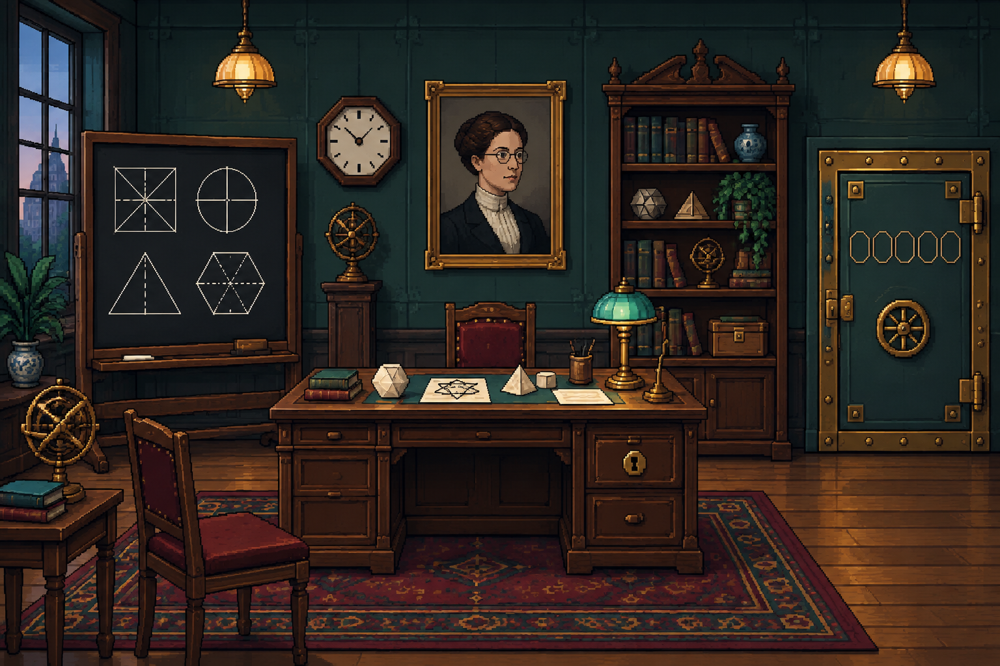

Göttingen, 1925

Uma anotação importante foi trancada no cofre. Resolva quatro enigmas, guarde os símbolos e abra a porta.
Encontre as 4 pistas e destrave o cofre. O cronômetro começa agora, observe cada objeto da sala com atenção.
Emmy Noether mostrou que as simetrias da natureza estão ligadas às leis de conservação — uma ideia que transformou a matemática e a física.
TEMPO: 00:00
“Minhas ideias são meus métodos.”